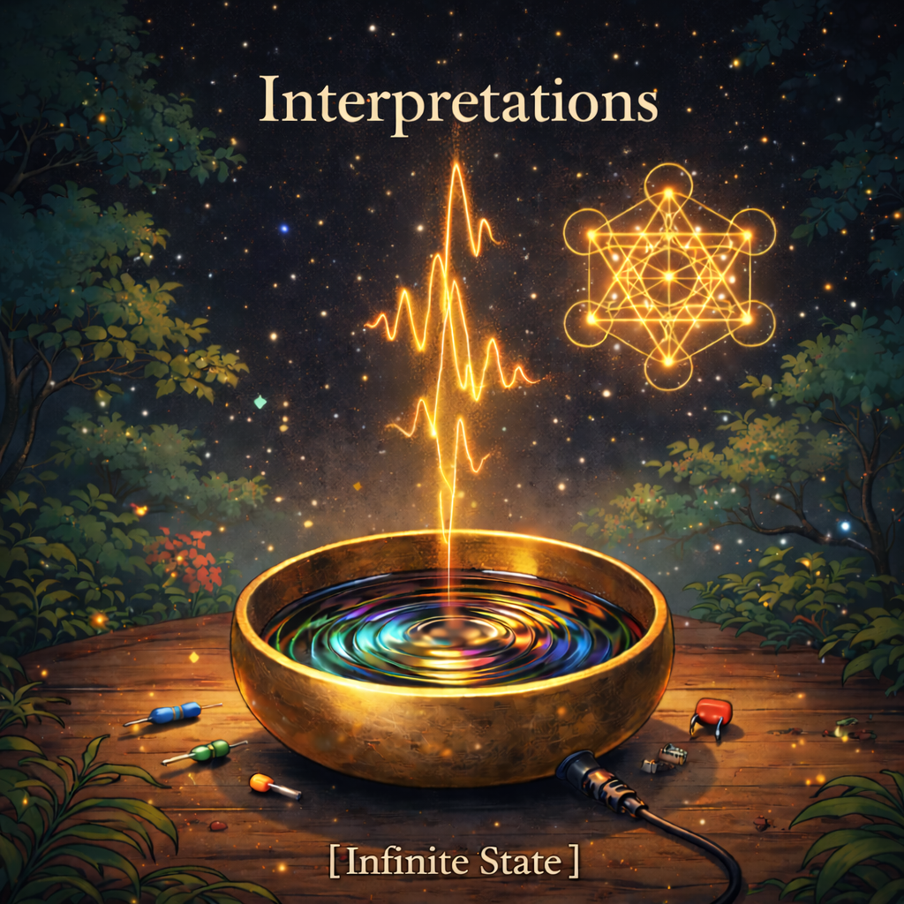

Sitar ragas with 808 drops. Singing bowls over trap beats.
A string quartet ambushed by drum & bass.
Five voices simulating auditory hallucinations.
A piano telling the story of a psychotic break — every note placed by hand.
Microtonal tuning systems. Mellotron tape warble. Raw oscillator screams.
Every sound generated from Python source code using
pytheory.
No samples. No DAW. The music is the code.